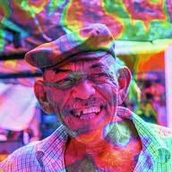

آئریڈیسنس

لیئر کے غیر شفاف حصوں کو بہتی ہوئی قوس قزح جیسی چمک سے ڈھانپتا ہے، جیسے پانی پر تیل یا صابن کا بلبلہ۔
سیٹنگز
| سیٹنگ | قسم | رینج | ڈیفالٹ |
|---|---|---|---|
| اسکیل | نمبر | 0.01 سے 50 تک | 1 |
| ایوولوشن | نمبر | -50 سے 50 تک | 0 |
| ہیو شفٹ | نمبر | -10 سے 10 تک | 0 |
| سیچوریشن | نمبر | 0% سے 100% تک | 60% |
| الفا | نمبر | 0% سے 100% تک | 80% |
| بلینڈنگ موڈ | انتخاب | نارمل, ملٹی پلائی, اسکرین, اوورلے, سافٹ لائٹ, ہارڈ لائٹ, ایڈ, ڈارکن, لائٹن, ڈفرنس, کلر ڈاج, کلر برن | نارمل |
| سیڈ | نمبر | 0 سے 5 تک | 0 |